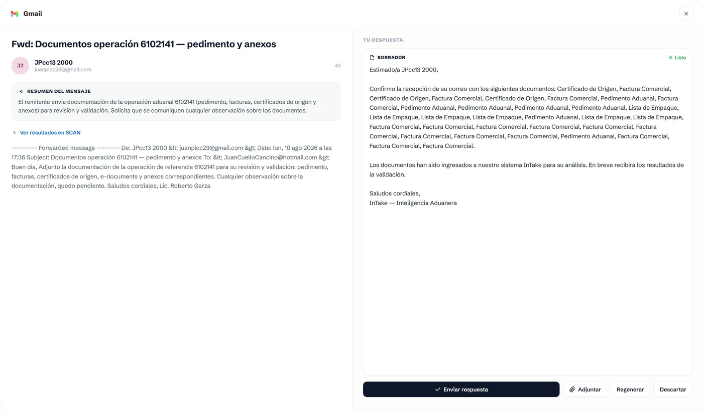
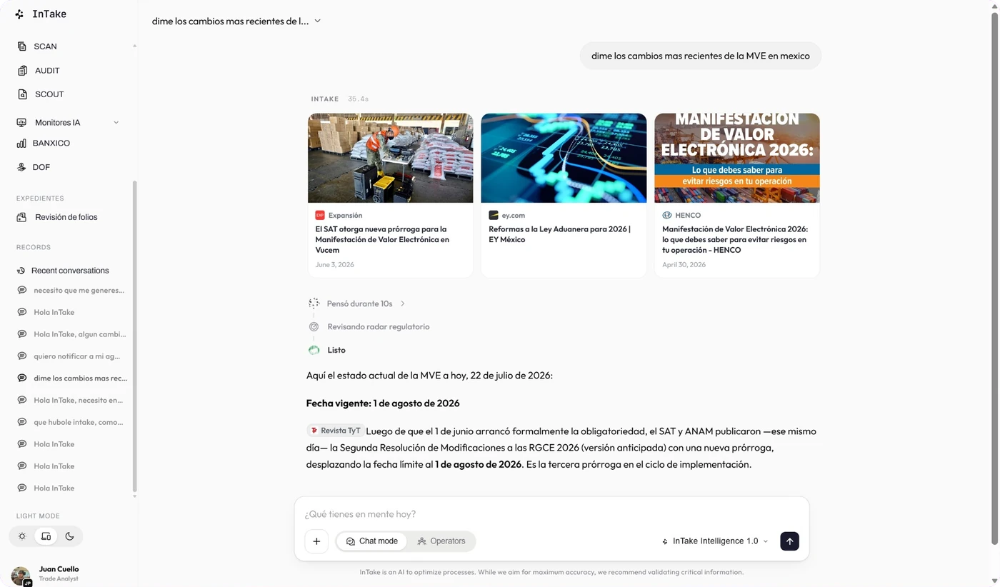
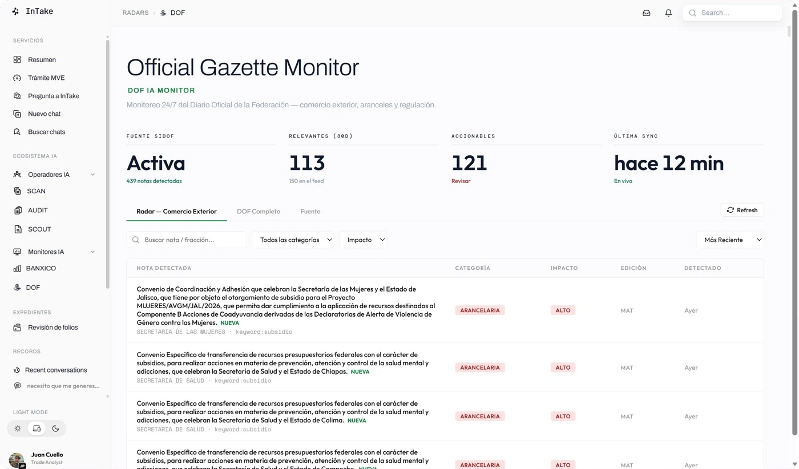

AI-Powered Trade Compliance
Backoffice Without Friction
Extract, analyse, audit and scout
your trade operations, all in one single place

Extract, analyse, audit and scout
your trade operations, all in one single place
InTake is the AI platform for trade compliance and operations that connects your 3 specialized operators in a single place, cutting your exposure to fines and cost overruns without slowing your operation down.
It routes every document to the right operator automatically, keeps all your customs context in one place, and lets you go from extraction to audit to tariff classification — without leaving your workflow.
From pulling data out of pedimentos to detecting compliance findings and spotting savings in tariff codes, InTake does the heavy lifting and applies the right engine for each task — SCAN, AUDIT or SCOUT — so you stop exposing yourself to SAT fines and start operating with certainty.
Connect your inbox and let InTake start helping you organize it.
Our agents replies to your inbox and monitors real life updates
from SAT, DOF and BANXICO.

InTake reads your inbox, understands each thread
and drafts the reply — attachments already linked
to the operation, ready for you to review and send.

Ask InTake anything about your operation and it
answers with the regulation behind it — citing the
DOF, the SAT rules and the sources it consulted.

Agents watch the DOF, the SAT and Banxico around
the clock, classify what actually matters and cross
it against the tariff codes in your operations.
Classification, cross-validation, fiscal impact and the regulatory radar all run on their own. Your team stops chasing numbers and stops re-keying by hand.
SCAN reads pedimentos, invoices, packing lists and certificates — it classifies every file and pulls every field, even what is handwritten or off-format.
AUDIT cross-checks the documents against each other and against customs law and the official catalogs: tariff schedule, NOMs, permits, duties and IMMEX rules.
It doesn't just flag what is wrong: it quantifies the fine, the duty and the tax at risk, and cites the article of the law behind every number.
InTake watches the official gazette, the tax authority and the central bank around the clock, and tells you when a change hits your tariff codes.
It drafts the emails to your supplier and your customs broker, ready to send from Outlook, and builds the spreadsheets with the formulas already verified.
Every operation is assembled with its documents, its findings and its history — traceable, auditable and isolated per account.

It classifies every file by what is inside — pedimento, invoice, packing list, certificate of origin or other — and pulls the fields page by page, whatever format the supplier uses.
See how it works
It validates the pedimento against the invoices, the certificates of origin and the official catalogs — tariff codes, NOMs, permits and duties — and puts a peso figure on the fine, the tax and the duty at risk.

It proposes the tariff code with the General Rules reasoning behind it, its confidence level and the regulatory dossier: which NOMs, permits and restrictions apply.
InTake is an AI copilot for Mexican customs operations. It reads your pedimentos, invoices and certificates, cross-checks them against the rules, and flags risks before they reach the aduana — so nothing turns into a fine.
Pedimentos, commercial invoices, packing lists and certificates of origin — scanned or digital. SCAN classifies every file and extracts every field automatically, with no templates or manual tagging.
AUDIT cross-checks each operation against thirteen validation layers — LIGIE fractions, permits, NOMs, cuotas and fiscal rules — and calculates the fiscal exposure of every finding, so you see exactly what it would cost.
Yes. InTake is designed specifically for Mexican IMMEX manufacturers, including the new electronic value declaration (MVE) obligations coming into effect in 2026.
Your documents and results stay scoped to your own account. Data is encrypted and never shared between clients.
The best way to begin is to get in touch with our team. Reach out and we'll set up a guided walkthrough on your own operation — we help you onboard, bring in your documents, and show you the classification, audit and findings live, so you can see exactly what InTake catches before you commit. Just tell us a bit about your IMMEX operation and we'll get back to you within a day to schedule your trial.